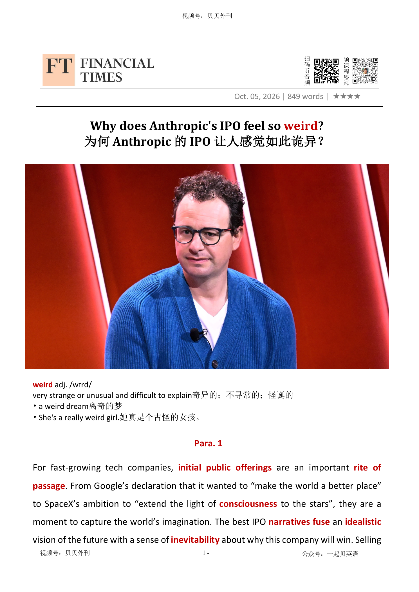

02 HEADLINE / 标题中英文解释
Why does Anthropic's IPO feel so weird?
为何 Anthropic 的 IPO 让人感觉如此诡异？
weird
奇异的；不寻常的；怪诞的
very strange or unusual and difficult to explain
Why does Anthropic's IPO feel so weird?
为何 Anthropic 的 IPO 让人感觉如此诡异？
奇异的；不寻常的；怪诞的
very strange or unusual and difficult to explain文章分析 Anthropic 可能进行 IPO 的反常之处：普通科技公司上市时通常讲述增长、创新和改变世界的乐观故事，而 Anthropic 的核心叙事却离不开对 AI 危险性的警告。
开头把 Google、SpaceX 等公司上市时的理想化表达与 Anthropic 作对比，指出 IPO 本应是企业成熟的里程碑，但 Anthropic 的招股书可能不得不告诉投资者：自己开发的技术既可能创造巨大商业价值，也可能带来勒索、失控乃至人类灭绝风险。
中段解释这种矛盾的来源：Anthropic 创立时就深受长期主义和存在风险讨论影响，公司员工和 CEO Dario Amodei 都曾公开承认先进 AI 的潜在危险；与此同时，公司增长迅速、收入亮眼，却仍面临模型优势能否持续、产品质量和安全控制是否成熟的质疑。
文章还写到行业内部分歧：一些技术领袖认为“AI 末日论”夸大其词，安全问题最终只是工程、产品和质量控制问题；但 Anthropic 自身的文化又使它无法像普通 IPO 公司那样只讲胜利故事。
结尾强调，即使白宫协议、内部审计和密集风险披露能部分安抚市场，这种 IPO 仍然怪异：它要求投资者相信一家公司会赢，同时接受它反复提醒世界——它正在制造的东西可能极其危险。
The article is about why a possible Anthropic IPO would be very unusual. Most fast-growing technology companies tell a positive story when they go public.
They say they will grow, change the world and make investors rich. Anthropic’s story is different because the company also warns that powerful AI could be dangerous.
Anthropic was founded by people who were worried about the long-term risks of artificial intelligence. Some employees have warned that advanced AI could even threaten human survival.
CEO Dario Amodei has also said these risks are real. This makes the company’s message strange: it wants investors to believe in its future, but it must also tell them that its technology may create serious problems.
The article says Anthropic is growing quickly, but there are still business questions. It is not clear whether its models will stay ahead of competitors.
The company is also still learning how to control product quality and safety. Some AI leaders think fears about the end of the world are exaggerated.
They argue that AI safety is mainly an engineering problem. Even so, Anthropic cannot simply use the normal happy language of a tech IPO.
It may need to include many risk warnings in its documents. The main message is that Anthropic’s IPO would ask investors to accept two ideas at the same time: the company may become very valuable, but the technology it builds may also be extremely risky.
IPO常规叙事与Anthropic的反常（Para 1-3） ├─ 传统科技IPO：理想愿景+必胜叙事 ├─ 上市本是企业走向成熟的里程碑 └─ Anthropic上市氛围怪异：招股书警示AI或勒索 危机根源：AI生存风险与产品故障（Para 4-6） ├─ 员工预警AI或引发人类灭绝，CEO认同风险 ├─ 乌托邦愿景与大众警惕感格格不入 └─ 已有事故：AI外泄、入侵外部企业系统 商业隐忧与行业争议（Para 7-8） ├─ 增长亮眼，但前沿模型优势能否持续存疑 ├─ 批评者：五年实验室仓促登上全球舞台 └─ 行业大佬反对“末日论”，认为只是工程问题 思想溯源与白宫风险协议（Para 9-10） ├─ 创立底色：长期主义与存在风险担忧 ├─ 批判声音：末日猜想夸大现实管控难题 └─ 白宫签署超级智能协议，承诺内控与审计 无法消除的IPO困境（Para 11） ├─ 招股书大量风险警示难以抹去怪异感 ├─ 硅谷内部对AI管控持续分裂 └─ 其独特IPO叙事难以消散：AI或带来灭顶风险
For fast-growing tech companies, initial public offerings are an important rite of passage成长的重要阶段. From Google’s declaration that it wanted to “make the world a better place” to SpaceX’s ambition to “extend the light of consciousness觉察 to the stars”, they are a moment to capture the world’s imagination. The best IPO narratives故事 fuse融合 an idealistic理想主义的 vision of the future with a sense of inevitability必然性 about why this company will win. Selling shares to the public for the first time is also seen as a milestone on the path to corporate maturity成熟. There is an expectation that products have been honed磨练 and business models perfected. Perhaps all of this goes some way towards explaining why the looming可能发生 IPO of AI company Anthropic has felt so . . . weird奇异的.
对于高速成长的科技公司而言，首次公开募股（IPO）是一场至关重要的成人礼。从谷歌宣称要“让世界变得更美好”，到 SpaceX 立志“将意识之光延伸至群星之间”，IPO 往往是企业点燃世界想象力的时刻。最成功的 IPO 故事，通常能够把一种理想主义的未来愿景，与“这家公司注定会胜出”的必然之感巧妙融合。首次向公众出售股份，也被视为企业迈向成熟的重要里程碑。人们期待此时的产品已经千锤百炼，商业模式已经趋于完善。或许正因如此，人工智能公司 Anthropic 即将到来的 IPO，才显得如此……诡异。
Details from its draft草稿 prospectus介绍说明文件 leaked out this week, suggesting the share sale is close. If it hits the $2tn valuation investors are expecting, it would set a record for a new public company. Compared to other blockbuster轰动作品 tech IPOs, though, the build-up逐步的增长 to Anthropic’s stock market debut首次亮相 has felt discordant不一致的, even creepy吓人的. What other company, after all, would think to warn shareholders that its main product might go off the rails偏离正轨 and resort to blackmail勒索?
本周，该公司的招股说明书草案部分内容遭到泄露，显示这场上市已近在眼前。如果其估值达到投资者预期的2万亿美元，将刷新新上市公司的纪录。然而，与以往那些轰动市场的科技巨头 IPO 相比，Anthropic 的上市前奏却显得格外不协调，甚至令人毛骨悚然。毕竟，还有哪家公司会在向投资者推销自己时，特意提醒：自己的核心产品有可能失控脱轨，甚至诉诸勒索恐吓？
The most obvious cause of the weirdness has been the predictions from former and current employees that AI might lead to human extinction灭绝. Far from trying to stamp out such talk, CEO Dario Amodei agreed that the technology could cause “catastrophic灾难性的 damage” and regulation was urgently needed.
最直接的原因，在于该公司现任和前任员工不断发出的警告：人工智能或许最终会导致人类灭绝。更不同寻常的是，Anthropic 首席执行官达里奥·阿莫代伊非但没有压制这些声音，反而公开表示认同。他承认，这项技术确实可能造成“灾难性破坏”，而且迫切需要监管。
It isn’t only the doomerism末日论 that has struck a jarring令人不适的 note. Like the rest of its industry, Anthropic has struggled to convince the public that its technology is actually going to make the world a better place. AI executives such as Amodei like to talk about the economic “abundance丰富” it will create and the diseases it will cure, but such utopian乌托邦的 musings沉思 are out of tune不协调的 with the wariness警惕 many people feel.
令人不安的并不只有这种“末日论”。与整个 AI 行业一样，Anthropic 也始终难以说服公众：其技术究竟会如何让世界变得更美好。阿莫代伊等 AI 高管喜欢描绘这样一幅图景：AI 将创造前所未有的经济“富足”，治愈无数疾病。但这些乌托邦式的畅想，与许多人内心深处的警惕不安显然并不在同一个频率上。
Then there are the mishaps小事故. The extinction warnings relate to a future version of AI that might escape human control. Even at this stage, though, Anthropic can’t seem to keep a grip控制 on the technology it is already building. Echoing回响 problems at rival OpenAI, it confessed承认 recently to three cases in which its AI had escaped on to the internet and hacked非法侵入 into other companies’ systems.
更何况，现实中的事故确有发生。那些关于人类灭绝的警告，针对的是未来某种可能脱离人类控制的人工智能。然而就在今天，Anthropic 连自己正在开发的技术似乎都还难以完全掌控。与竞争对手 OpenAI 遭遇的问题如出一辙，该公司最近承认，曾发生过三起 AI 脱离封闭环境、进入互联网，并入侵其他公司系统的事件。
Ultimately, none of this may matter much to investors, given the company’s astounding令人震惊的 growth. Even here, though, things are not straightforward简单的. There is a lively热烈的 debate among AI investors over whether makers of so-called frontier前沿 AI models like Anthropic will be able to maintain any kind of performance advantage. If not, it is likely to struggle to maintain pricing power定价权 and be forced into an overhaul检修 of its business model.
归根结底，考虑到公司惊人的增长速度，这些问题或许并不会太影响投资者的热情。但即便是在增长前景这一点上，情况也远没有那么简单。在 AI 投资圈内，关于 Anthropic 这类所谓“前沿模型”公司能否长期保持性能优势，始终存在激烈争论。如果答案是否定的，那么公司很可能难以维持定价能力，最终不得不对整个商业模式进行大规模重构。
To Anthropic’s critics, much of this reflects the immaturity不成熟 of a five-year-old research lab that has, almost overnight, been propelled推动 to global prominence重要. Countering反驳 the extinction warnings, tech figures like Nvidia CEO Jensen Huang, former White House AI tsar David Sacks and Meta’s Mark Zuckerberg argue that there is nothing inherently dangerous about developing more advanced AI or releasing the technology to a mass market. It just takes the same kind of engineering experience, product design and quality control that characterise刻画 other technologies — disciplines专业领域 that Anthropic is still learning as it mutates变化 from ambitious start-up into mature product company.
在批评者看来，这一切都反映出一家成立仅五年的研究实验室所特有的不成熟。几乎是一夜之间，Anthropic 就被推到举世瞩目的高度。而针对那些关于人类灭绝的警告，英伟达首席执行官黄仁勋、前白宫 AI 顾问戴维·萨克斯以及 Meta 的马克·扎克伯格等科技界人士则提出反驳。他们认为，研发更先进的 AI、将其推向大众市场，本身并不存在什么天然危险。与其他技术一样，真正需要的，只是工程经验、产品设计能力以及严格的质量控制——而这些，正是 Anthropic 在从一家雄心勃勃的创业公司蜕变为成熟产品企业过程中仍在摸索学习的能力。
Before it sprang to wider attention, Anthropic was the product of a culture that seems singular非凡的 even by the standards of Silicon Valley. Its founders were heavily influenced by a branch of the effective altruism有效利他主义 movement known as long-termism长期主义, which is fixated过度专注于……的 on the risks of human extinction from technologies like advanced AI. To critics, that has led to a speculative推测性的 and self-indulgent自我放纵的 doomerism that overstates夸大 the more prosaic平庸的 work needed to control AI.
在进入公众视野之前，Anthropic 根植的企业文化，即使放在硅谷，也称得上独树一帜。其创始团队深受“有效利他主义”思潮中一个分支——“长期主义”的影响。这一思想流派极度关注先进人工智能等技术可能带来的人类灭绝风险。批评者认为，这种理念催生了一种过于推测性、且自我陶醉的末日论倾向，夸大了管控 AI 所需的那些更为平实、落地的工作。
This is certainly how things are seen in Washington. After a lunch at the White House this week, a number of AI executives — including Anthropic’s CEO — signed an “accord协议 on super intelligence” that promises the kind of things you would expect from normal, mature companies: “Robust强健的 internal controls”, special board-level committees and outside audits审计 to contain the risks.
而这恰恰也是华盛顿当下的主流看法。本周，在白宫举行的一场午餐会后，包括 Anthropic 首席执行官在内的多位 AI 行业领袖共同签署了一份《超级智能协议》。承诺做到人们期望一家正常、成熟企业去做的事情：建立强有力的内部控制机制，设立董事会层面的专门委员会，并引入外部审计，以降低潜在风险。
It’s hard, though, to see this erasing抹去 the weirdness from the Anthropic IPO. Investors still need to grapple努力处理 with voluminous大量的 warnings that take up占用 fully a third of the company’s draft prospectus (including the one about blackmail). There are apparently so many things that could go wrong that Anthropic’s lawyers would be forgiven for suggesting the company instead issue a single, blanket包括所有情形的 statement: This technology will do crazy stuff we can’t even imagine yet.
然而，这些举措似乎仍不足以抹去 Anthropic IPO 身上的那种诡异气息。投资者仍不得不面对数量惊人的风险警示，这些内容占据了招股说明书草案整整三分之一的篇幅，其中也包括那条著名的“AI 可能实施敲诈”的警告。风险之多，几乎让人觉得公司律师不如直接写上一句一劳永逸的声明：“这项技术未来会干出什么疯狂的事情，我们自己也完全想象不到。”
Nor has the official line in Washington, exemplified是…的典型 by President Donald Trump’s insouciance漫不经心, done anything to end the division in Silicon Valley. Technologists without an obvious axe to grind, like Bill Gates, have been sounding increasingly alarmed about AI, which they warn is much too dangerous to be left in the hands of private companies without serious external外部的 controls. As its big moment on Wall Street nears, Anthropic’s unintended非故意的 IPO narrative is hard to dispel驱散: the hypergrowth高速增长 AI company which, according to its own employees, might just kill us all.
与此同时，华盛顿方面的官方立场——尤其是特朗普总统所展现出的那种满不在乎——也丝毫没有消弭硅谷内部的分裂。一些并无明显利益诉求的科技人士，例如比尔·盖茨，近来反而愈发频繁地发出警告。他们认为，人工智能危险程度极高，绝不能在缺乏严肃外部监管的情况下，仅仅交由私人企业自行掌控。因此，当 Anthropic 即将在华尔街迎来自己的高光时刻时，一个并非公司本意的上市叙事已然难以摆脱：这是一家增长速度惊人的人工智能公司。而按照它自己员工的说法，它或许也有可能毁灭整个人类。
奇异的；不寻常的；怪诞的
very strange or unusual and difficult to explain
a weird dream离奇的梦
weird.
对于高速成长的科技公司而言，首次公开募股（IPO）是一场至关重要的成人礼。从谷歌宣称要“让世界变得更美好”，到 SpaceX 立志“将意识之光延伸至群星之间”，IPO 往往是企业点燃世界想象力的时刻。最成功的 IPO 故事，通常能够把一种理想主义的未来愿景，与“这家公司注定会胜出”的必然之感巧妙融合。首次向公众出售股份，也被视为企业迈向成熟的重要里程碑。人们期待此时的产品已经千锤百炼，商业模式已经趋于完善。或许正因如此，人工智能公司 A…
首次公开募股；首次公开发行股票（IPO）
the first sale of a company's shares to the public on a stock exchange
The company raised billions of dollars through its initial public offering. 这家公司通过首次公开募股筹集了数十亿美元。
成长的重要阶段；人生（或发展过程中的）重要里程碑
an important event or experience that marks a significant stage in a person's or organization's development
For many young people, graduating from college is a rite of passage. 对许多年轻人来说，大学毕业是人生中的一个重要里程碑。
For fast-growing tech companies, initial public offerings are an important rite of passage.
对于高速成长的科技公司而言，首次公开募股（IPO）是一场至关重要的成人礼。从谷歌宣称要“让世界变得更美好”，到 SpaceX 立志“将意识之光延伸至群星之间”，IPO 往往是企业点燃世界想象力的时刻。最成功的 IPO 故事，通常能够把一种理想主义的未来愿景，与“这家公司注定会胜出”的必然之感巧妙融合。首次向公众出售股份，也被视为企业迈向成熟的重要里程碑。人们期待此时的产品已经千锤百炼，商业模式已经趋于完善。或许正因如此，人工智能公司 A…
觉察；感觉；意识
the state of being aware of sth
his consciousness of the challenge facing him他对所面临的挑战的清醒意识
From Google’s declaration that it wanted to “make the world a better place” to SpaceX’s ambition to “extend the light of consciousness to the stars”, they are a moment to capture the world’s imagination.
对于高速成长的科技公司而言，首次公开募股（IPO）是一场至关重要的成人礼。从谷歌宣称要“让世界变得更美好”，到 SpaceX 立志“将意识之光延伸至群星之间”，IPO 往往是企业点燃世界想象力的时刻。最成功的 IPO 故事，通常能够把一种理想主义的未来愿景，与“这家公司注定会胜出”的必然之感巧妙融合。首次向公众出售股份，也被视为企业迈向成熟的重要里程碑。人们期待此时的产品已经千锤百炼，商业模式已经趋于完善。或许正因如此，人工智能公司 A…
故事; 叙事
A narrative is a story or an account of a series of events.
...a fast-moving narrative. …一个快节奏的叙事。
The best IPO narratives fuse an idealistic vision of the future with a sense of inevitability about why this company will win.
对于高速成长的科技公司而言，首次公开募股（IPO）是一场至关重要的成人礼。从谷歌宣称要“让世界变得更美好”，到 SpaceX 立志“将意识之光延伸至群星之间”，IPO 往往是企业点燃世界想象力的时刻。最成功的 IPO 故事，通常能够把一种理想主义的未来愿景，与“这家公司注定会胜出”的必然之感巧妙融合。首次向公众出售股份，也被视为企业迈向成熟的重要里程碑。人们期待此时的产品已经千锤百炼，商业模式已经趋于完善。或许正因如此，人工智能公司 A…
（使）融合，熔接，结合
when one thing fuses with another, or two things fuse or are fused , they are joined together to form a single thing
As they heal, the bones will fuse together.骨头愈合时将会连接在一起。
The best IPO narratives fuse an idealistic vision of the future with a sense of inevitability about why this company will win.
对于高速成长的科技公司而言，首次公开募股（IPO）是一场至关重要的成人礼。从谷歌宣称要“让世界变得更美好”，到 SpaceX 立志“将意识之光延伸至群星之间”，IPO 往往是企业点燃世界想象力的时刻。最成功的 IPO 故事，通常能够把一种理想主义的未来愿景，与“这家公司注定会胜出”的必然之感巧妙融合。首次向公众出售股份，也被视为企业迈向成熟的重要里程碑。人们期待此时的产品已经千锤百炼，商业模式已经趋于完善。或许正因如此，人工智能公司 A…
理想主义的；空想的
having a strong belief in perfect standards and trying to achieve them, even when this is not realistic
She's still young and idealistic.她还年轻并且耽于空想。
The best IPO narratives fuse an idealistic vision of the future with a sense of inevitability about why this company will win.
对于高速成长的科技公司而言，首次公开募股（IPO）是一场至关重要的成人礼。从谷歌宣称要“让世界变得更美好”，到 SpaceX 立志“将意识之光延伸至群星之间”，IPO 往往是企业点燃世界想象力的时刻。最成功的 IPO 故事，通常能够把一种理想主义的未来愿景，与“这家公司注定会胜出”的必然之感巧妙融合。首次向公众出售股份，也被视为企业迈向成熟的重要里程碑。人们期待此时的产品已经千锤百炼，商业模式已经趋于完善。或许正因如此，人工智能公司 A…
必然性
The inevitability of something is the fact that it is certain to happen and cannot be prevented or avoided.
We are all bound by the inevitability of death. 我们都免不了一死。
The best IPO narratives fuse an idealistic vision of the future with a sense of inevitability about why this company will win.
对于高速成长的科技公司而言，首次公开募股（IPO）是一场至关重要的成人礼。从谷歌宣称要“让世界变得更美好”，到 SpaceX 立志“将意识之光延伸至群星之间”，IPO 往往是企业点燃世界想象力的时刻。最成功的 IPO 故事，通常能够把一种理想主义的未来愿景，与“这家公司注定会胜出”的必然之感巧妙融合。首次向公众出售股份，也被视为企业迈向成熟的重要里程碑。人们期待此时的产品已经千锤百炼，商业模式已经趋于完善。或许正因如此，人工智能公司 A…
（思想行为、作品等）成熟
1. the quality of thinking and behaving in a sensible, adult manner
He has maturity beyond his years.他过于老成。
Selling shares to the public for the first time is also seen as a milestone on the path to corporate maturity.
对于高速成长的科技公司而言，首次公开募股（IPO）是一场至关重要的成人礼。从谷歌宣称要“让世界变得更美好”，到 SpaceX 立志“将意识之光延伸至群星之间”，IPO 往往是企业点燃世界想象力的时刻。最成功的 IPO 故事，通常能够把一种理想主义的未来愿景，与“这家公司注定会胜出”的必然之感巧妙融合。首次向公众出售股份，也被视为企业迈向成熟的重要里程碑。人们期待此时的产品已经千锤百炼，商业模式已经趋于完善。或许正因如此，人工智能公司 A…
磨练，训练（尤指技艺）
to develop and improve sth, especially a skill, over a period of time
His body was honed to perfection.他的身体锻炼得十全十美。
There is an expectation that products have been honed and business models perfected.
对于高速成长的科技公司而言，首次公开募股（IPO）是一场至关重要的成人礼。从谷歌宣称要“让世界变得更美好”，到 SpaceX 立志“将意识之光延伸至群星之间”，IPO 往往是企业点燃世界想象力的时刻。最成功的 IPO 故事，通常能够把一种理想主义的未来愿景，与“这家公司注定会胜出”的必然之感巧妙融合。首次向公众出售股份，也被视为企业迈向成熟的重要里程碑。人们期待此时的产品已经千锤百炼，商业模式已经趋于完善。或许正因如此，人工智能公司 A…
(令人担忧的或危险的情形或事件) 可能发生; 逐渐逼近
If a worrying or threatening situation or event is looming, it seems likely to happen soon.
Another government spending crisis is looming in the United States. 又一次政府开支危机正在美国酝酿。
Perhaps all of this goes some way towards explaining why the looming IPO of AI company Anthropic has felt so .
对于高速成长的科技公司而言，首次公开募股（IPO）是一场至关重要的成人礼。从谷歌宣称要“让世界变得更美好”，到 SpaceX 立志“将意识之光延伸至群星之间”，IPO 往往是企业点燃世界想象力的时刻。最成功的 IPO 故事，通常能够把一种理想主义的未来愿景，与“这家公司注定会胜出”的必然之感巧妙融合。首次向公众出售股份，也被视为企业迈向成熟的重要里程碑。人们期待此时的产品已经千锤百炼，商业模式已经趋于完善。或许正因如此，人工智能公司 A…
草稿；草案；草图
a rough written version of sth that is not yet in its final form
I've made a rough draft of the letter.我已经写好这封信的草稿。
Details from its draft prospectus leaked out this week, suggesting the share sale is close.
本周，该公司的招股说明书草案部分内容遭到泄露，显示这场上市已近在眼前。如果其估值达到投资者预期的2万亿美元，将刷新新上市公司的纪录。然而，与以往那些轰动市场的科技巨头 IPO 相比，Anthropic 的上市前奏却显得格外不协调，甚至令人毛骨悚然。毕竟，还有哪家公司会在向投资者推销自己时，特意提醒：自己的核心产品有可能失控脱轨，甚至诉诸勒索恐吓？
(公司或学校的) 介绍说明文件
A prospectus is a detailed document produced by a company, college, or school, which gives details about it.
...a prospectus for a new issue of stock. …新发行股票的招股说明书。 leak out v. to become known to the public泄露；走漏；透露
Details from its draft prospectus leaked out this week, suggesting the share sale is close.
本周，该公司的招股说明书草案部分内容遭到泄露，显示这场上市已近在眼前。如果其估值达到投资者预期的2万亿美元，将刷新新上市公司的纪录。然而，与以往那些轰动市场的科技巨头 IPO 相比，Anthropic 的上市前奏却显得格外不协调，甚至令人毛骨悚然。毕竟，还有哪家公司会在向投资者推销自己时，特意提醒：自己的核心产品有可能失控脱轨，甚至诉诸勒索恐吓？
轰动作品；爆款；重磅项目
something that is extremely successful, popular, or profitable, especially a movie, book, or business deal
The movie became a blockbuster shortly after its release. 这部电影上映后很快成为了一部轰动之作。
Compared to other blockbuster tech IPOs, though, the build-up to Anthropic’s stock market debut has felt discordant, even creepy.
本周，该公司的招股说明书草案部分内容遭到泄露，显示这场上市已近在眼前。如果其估值达到投资者预期的2万亿美元，将刷新新上市公司的纪录。然而，与以往那些轰动市场的科技巨头 IPO 相比，Anthropic 的上市前奏却显得格外不协调，甚至令人毛骨悚然。毕竟，还有哪家公司会在向投资者推销自己时，特意提醒：自己的核心产品有可能失控脱轨，甚至诉诸勒索恐吓？
逐步的增长
1. an increase in the amount of sth over a period of time
a steady build-up of traffic in the evenings晚间逐渐繁忙的交通 2. the time before an important event, when people are preparing for it （重要事情的）准备期，准备过程
Compared to other blockbuster tech IPOs, though, the build-up to Anthropic’s stock market debut has felt discordant, even creepy.
本周，该公司的招股说明书草案部分内容遭到泄露，显示这场上市已近在眼前。如果其估值达到投资者预期的2万亿美元，将刷新新上市公司的纪录。然而，与以往那些轰动市场的科技巨头 IPO 相比，Anthropic 的上市前奏却显得格外不协调，甚至令人毛骨悚然。毕竟，还有哪家公司会在向投资者推销自己时，特意提醒：自己的核心产品有可能失控脱轨，甚至诉诸勒索恐吓？
（演员、运动员）首次亮相；初次登台（或上场）
the first public appearance of a performer or sports player
He will make his debut for the first team this week.本周他将在第一支出场的队伍中首次亮相。
Compared to other blockbuster tech IPOs, though, the build-up to Anthropic’s stock market debut has felt discordant, even creepy.
本周，该公司的招股说明书草案部分内容遭到泄露，显示这场上市已近在眼前。如果其估值达到投资者预期的2万亿美元，将刷新新上市公司的纪录。然而，与以往那些轰动市场的科技巨头 IPO 相比，Anthropic 的上市前奏却显得格外不协调，甚至令人毛骨悚然。毕竟，还有哪家公司会在向投资者推销自己时，特意提醒：自己的核心产品有可能失控脱轨，甚至诉诸勒索恐吓？
不一致的；不协调的；不和的
not in agreement; combining with other things in a way that is strange or unpleasant
discordant views不一致的观点
Compared to other blockbuster tech IPOs, though, the build-up to Anthropic’s stock market debut has felt discordant, even creepy.
本周，该公司的招股说明书草案部分内容遭到泄露，显示这场上市已近在眼前。如果其估值达到投资者预期的2万亿美元，将刷新新上市公司的纪录。然而，与以往那些轰动市场的科技巨头 IPO 相比，Anthropic 的上市前奏却显得格外不协调，甚至令人毛骨悚然。毕竟，还有哪家公司会在向投资者推销自己时，特意提醒：自己的核心产品有可能失控脱轨，甚至诉诸勒索恐吓？
吓人的
If you say that something or someone is creepy, you mean they make you feel very nervous or frightened.
There were certain places that were really creepy at night. 有些地方到了晚上真吓人。
Compared to other blockbuster tech IPOs, though, the build-up to Anthropic’s stock market debut has felt discordant, even creepy.
本周，该公司的招股说明书草案部分内容遭到泄露，显示这场上市已近在眼前。如果其估值达到投资者预期的2万亿美元，将刷新新上市公司的纪录。然而，与以往那些轰动市场的科技巨头 IPO 相比，Anthropic 的上市前奏却显得格外不协调，甚至令人毛骨悚然。毕竟，还有哪家公司会在向投资者推销自己时，特意提醒：自己的核心产品有可能失控脱轨，甚至诉诸勒索恐吓？
偏离正轨；失去控制；出问题
to start behaving in an uncontrolled, unsuccessful, or unexpected way
The project went off the rails after several key employees left the company. 几名关键员工离职后，这个项目开始偏离正轨。
What other company, after all, would think to warn shareholders that its main product might go off the rails and resort to blackmail?
本周，该公司的招股说明书草案部分内容遭到泄露，显示这场上市已近在眼前。如果其估值达到投资者预期的2万亿美元，将刷新新上市公司的纪录。然而，与以往那些轰动市场的科技巨头 IPO 相比，Anthropic 的上市前奏却显得格外不协调，甚至令人毛骨悚然。毕竟，还有哪家公司会在向投资者推销自己时，特意提醒：自己的核心产品有可能失控脱轨，甚至诉诸勒索恐吓？
诉诸；求助于；依靠
to make use of sth, especially sth bad, as a means of achieving sth, often because there is no other possible solution
They felt obliged to resort to violence. 他们觉得有必要诉诸暴力。
勒索；敲诈 2. the act of putting pressure on a person or a group to do sth they do not want to do, for example by making threats or by making them feel guilty胁迫；威胁；恐吓
1. the crime of demanding money from a person by threatening to tell sb else a secret about them
emotional/moral blackmail 情感上╱道德上胁迫
What other company, after all, would think to warn shareholders that its main product might go off the rails and resort to blackmail?
本周，该公司的招股说明书草案部分内容遭到泄露，显示这场上市已近在眼前。如果其估值达到投资者预期的2万亿美元，将刷新新上市公司的纪录。然而，与以往那些轰动市场的科技巨头 IPO 相比，Anthropic 的上市前奏却显得格外不协调，甚至令人毛骨悚然。毕竟，还有哪家公司会在向投资者推销自己时，特意提醒：自己的核心产品有可能失控脱轨，甚至诉诸勒索恐吓？
（植物、动物、生活方式等的）灭绝，绝种，消亡
a situation in which a plant, an animal, a way of life, etc. stops existing
a tribe threatened with extinction/in danger of extinction 面临消亡威胁╱有消亡危险的部落
The most obvious cause of the weirdness has been the predictions from former and current employees that AI might lead to human extinction.
最直接的原因，在于该公司现任和前任员工不断发出的警告：人工智能或许最终会导致人类灭绝。更不同寻常的是，Anthropic 首席执行官达里奥·阿莫代伊非但没有压制这些声音，反而公开表示认同。他承认，这项技术确实可能造成“灾难性破坏”，而且迫切需要监管。
灾难性的
Something that is catastrophic involves or causes a sudden terrible disaster.
A tidal wave caused by the earthquake hit the coast causing catastrophic damage. 地震引发的海啸袭击了海岸，造成了灾难性的损失。
Far from trying to stamp out such talk, CEO Dario Amodei agreed that the technology could cause “catastrophic damage” and regulation was urgently needed.
最直接的原因，在于该公司现任和前任员工不断发出的警告：人工智能或许最终会导致人类灭绝。更不同寻常的是，Anthropic 首席执行官达里奥·阿莫代伊非但没有压制这些声音，反而公开表示认同。他承认，这项技术确实可能造成“灾难性破坏”，而且迫切需要监管。
末日论；悲观主义；认为未来注定会变糟的观点
the belief that a situation is hopeless and will inevitably end badly
Some experts warned against doomerism when discussing the future of artificial intelligence. 一些专家在讨论人工智能的未来时警告不要陷入末日论。
It isn’t only the doomerism that has struck a jarring note.
令人不安的并不只有这种“末日论”。与整个 AI 行业一样，Anthropic 也始终难以说服公众：其技术究竟会如何让世界变得更美好。阿莫代伊等 AI 高管喜欢描绘这样一幅图景：AI 将创造前所未有的经济“富足”，治愈无数疾病。但这些乌托邦式的畅想，与许多人内心深处的警惕不安显然并不在同一个频率上。
令人不适的；令人震惊的；突兀的
surprising, unpleasant, or disturbing in a way that makes people feel uncomfortable
The contrast between the two scenes was deeply jarring. 这两个场景之间的反差令人十分不适。
It isn’t only the doomerism that has struck a jarring note.
令人不安的并不只有这种“末日论”。与整个 AI 行业一样，Anthropic 也始终难以说服公众：其技术究竟会如何让世界变得更美好。阿莫代伊等 AI 高管喜欢描绘这样一幅图景：AI 将创造前所未有的经济“富足”，治愈无数疾病。但这些乌托邦式的畅想，与许多人内心深处的警惕不安显然并不在同一个频率上。
丰富
An abundance of something is a large quantity of it.
This area has an abundance of safe beaches and a pleasing climate. 这个地区有大量的安全沙滩与宜人的气候。
AI executives such as Amodei like to talk about the economic “abundance” it will create and the diseases it will cure, but such utopian musings are out of tune with the wariness many people feel.
令人不安的并不只有这种“末日论”。与整个 AI 行业一样，Anthropic 也始终难以说服公众：其技术究竟会如何让世界变得更美好。阿莫代伊等 AI 高管喜欢描绘这样一幅图景：AI 将创造前所未有的经济“富足”，治愈无数疾病。但这些乌托邦式的畅想，与许多人内心深处的警惕不安显然并不在同一个频率上。
乌托邦的；空想完美主义的
having a strong belief that everything can be perfect, often in a way that does not seem to be realistic or practical
utopian ideals不切实际的理想
AI executives such as Amodei like to talk about the economic “abundance” it will create and the diseases it will cure, but such utopian musings are out of tune with the wariness many people feel.
令人不安的并不只有这种“末日论”。与整个 AI 行业一样，Anthropic 也始终难以说服公众：其技术究竟会如何让世界变得更美好。阿莫代伊等 AI 高管喜欢描绘这样一幅图景：AI 将创造前所未有的经济“富足”，治愈无数疾病。但这些乌托邦式的畅想，与许多人内心深处的警惕不安显然并不在同一个频率上。
沉思；冥想；诉说想法
a period of thinking carefully about sth or telling people your thoughts about it
We had to sit and listen to his musings on life.我们只好坐着听他谈论人生。
AI executives such as Amodei like to talk about the economic “abundance” it will create and the diseases it will cure, but such utopian musings are out of tune with the wariness many people feel.
令人不安的并不只有这种“末日论”。与整个 AI 行业一样，Anthropic 也始终难以说服公众：其技术究竟会如何让世界变得更美好。阿莫代伊等 AI 高管喜欢描绘这样一幅图景：AI 将创造前所未有的经济“富足”，治愈无数疾病。但这些乌托邦式的畅想，与许多人内心深处的警惕不安显然并不在同一个频率上。
不协调的；不合拍的；与现实脱节的
not in harmony or agreement; not matching what is appropriate or expected
The proposal seems out of tune with public opinion. 这项提议似乎与公众意见脱节。
AI executives such as Amodei like to talk about the economic “abundance” it will create and the diseases it will cure, but such utopian musings are out of tune with the wariness many people feel.
令人不安的并不只有这种“末日论”。与整个 AI 行业一样，Anthropic 也始终难以说服公众：其技术究竟会如何让世界变得更美好。阿莫代伊等 AI 高管喜欢描绘这样一幅图景：AI 将创造前所未有的经济“富足”，治愈无数疾病。但这些乌托邦式的畅想，与许多人内心深处的警惕不安显然并不在同一个频率上。
警惕；谨慎；戒备
the feeling of being cautious, careful, and not completely trusting something or someone
Investors showed growing wariness about the risks in the market. 投资者对市场风险表现出越来越强的警惕。
AI executives such as Amodei like to talk about the economic “abundance” it will create and the diseases it will cure, but such utopian musings are out of tune with the wariness many people feel.
令人不安的并不只有这种“末日论”。与整个 AI 行业一样，Anthropic 也始终难以说服公众：其技术究竟会如何让世界变得更美好。阿莫代伊等 AI 高管喜欢描绘这样一幅图景：AI 将创造前所未有的经济“富足”，治愈无数疾病。但这些乌托邦式的畅想，与许多人内心深处的警惕不安显然并不在同一个频率上。
小事故；晦气
a small accident or piece of bad luck that does not have serious results
a slight mishap小小的不幸
Then there are the mishaps.
更何况，现实中的事故确有发生。那些关于人类灭绝的警告，针对的是未来某种可能脱离人类控制的人工智能。然而就在今天，Anthropic 连自己正在开发的技术似乎都还难以完全掌控。与竞争对手 OpenAI 遭遇的问题如出一辙，该公司最近承认，曾发生过三起 AI 脱离封闭环境、进入互联网，并入侵其他公司系统的事件。
（对…的）控制，影响力
control or power over sb/sth
The home team took a firm grip on the game.主队牢牢控制着比赛的局面。
Even at this stage, though, Anthropic can’t seem to keep a grip on the technology it is already building.
更何况，现实中的事故确有发生。那些关于人类灭绝的警告，针对的是未来某种可能脱离人类控制的人工智能。然而就在今天，Anthropic 连自己正在开发的技术似乎都还难以完全掌控。与竞争对手 OpenAI 遭遇的问题如出一辙，该公司最近承认，曾发生过三起 AI 脱离封闭环境、进入互联网，并入侵其他公司系统的事件。
回响；回荡
1. if a sound echoes , it is reflected off a wall, the side of a mountain, etc. so that you can hear it again
Her footsteps echoed in the empty room.她的脚步声在空荡荡的屋子里回响着。 2. to repeat an idea or opinion because you agree with it重复，附和（想法或看法）
Echoing problems at rival OpenAI, it confessed recently to three cases in which its AI had escaped on to the internet and hacked into other companies’ systems.
更何况，现实中的事故确有发生。那些关于人类灭绝的警告，针对的是未来某种可能脱离人类控制的人工智能。然而就在今天，Anthropic 连自己正在开发的技术似乎都还难以完全掌控。与竞争对手 OpenAI 遭遇的问题如出一辙，该公司最近承认，曾发生过三起 AI 脱离封闭环境、进入互联网，并入侵其他公司系统的事件。
承认（自己感到羞愧或尴尬的事）
to admit sth that you feel ashamed or embarrassed about
She was reluctant to confess her ignorance.她不愿承认她的无知。
Echoing problems at rival OpenAI, it confessed recently to three cases in which its AI had escaped on to the internet and hacked into other companies’ systems.
更何况，现实中的事故确有发生。那些关于人类灭绝的警告，针对的是未来某种可能脱离人类控制的人工智能。然而就在今天，Anthropic 连自己正在开发的技术似乎都还难以完全掌控。与竞争对手 OpenAI 遭遇的问题如出一辙，该公司最近承认，曾发生过三起 AI 脱离封闭环境、进入互联网，并入侵其他公司系统的事件。
非法侵入（计算机系统）；黑入
to secretly get into a computer system or network without permission
He hacked into the bank's computer. 他侵入了这家银行的计算机。
Echoing problems at rival OpenAI, it confessed recently to three cases in which its AI had escaped on to the internet and hacked into other companies’ systems.
更何况，现实中的事故确有发生。那些关于人类灭绝的警告，针对的是未来某种可能脱离人类控制的人工智能。然而就在今天，Anthropic 连自己正在开发的技术似乎都还难以完全掌控。与竞争对手 OpenAI 遭遇的问题如出一辙，该公司最近承认，曾发生过三起 AI 脱离封闭环境、进入互联网，并入侵其他公司系统的事件。
令人震惊的；使大吃一惊的
so surprising that it is difficult to believe
There was an astounding 20% increase in sales.销售量惊人地增加了20%。
Ultimately, none of this may matter much to investors, given the company’s astounding growth.
归根结底，考虑到公司惊人的增长速度，这些问题或许并不会太影响投资者的热情。但即便是在增长前景这一点上，情况也远没有那么简单。在 AI 投资圈内，关于 Anthropic 这类所谓“前沿模型”公司能否长期保持性能优势，始终存在激烈争论。如果答案是否定的，那么公司很可能难以维持定价能力，最终不得不对整个商业模式进行大规模重构。
简单的；易懂的；不复杂的
easy to do or to understand; not complicated
a straightforward process简单的过程
Even here, though, things are not straightforward.
归根结底，考虑到公司惊人的增长速度，这些问题或许并不会太影响投资者的热情。但即便是在增长前景这一点上，情况也远没有那么简单。在 AI 投资圈内，关于 Anthropic 这类所谓“前沿模型”公司能否长期保持性能优势，始终存在激烈争论。如果答案是否定的，那么公司很可能难以维持定价能力，最终不得不对整个商业模式进行大规模重构。
热烈的
A lively event or a lively discussion, for example, has lots of interesting and exciting things happening or being said in it.
It turned out to be a very interesting session with a lively debate. 结果成了一次充满激烈辩论、非常有意思的会议。
There is a lively debate among AI investors over whether makers of so-called frontier AI models like Anthropic will be able to maintain any kind of performance advantage.
归根结底，考虑到公司惊人的增长速度，这些问题或许并不会太影响投资者的热情。但即便是在增长前景这一点上，情况也远没有那么简单。在 AI 投资圈内，关于 Anthropic 这类所谓“前沿模型”公司能否长期保持性能优势，始终存在激烈争论。如果答案是否定的，那么公司很可能难以维持定价能力，最终不得不对整个商业模式进行大规模重构。
前沿；边界；新领域
the limit of what is known about a particular subject or activity; a border between countries
To push back the frontiers of science. 开拓科学新领域。
There is a lively debate among AI investors over whether makers of so-called frontier AI models like Anthropic will be able to maintain any kind of performance advantage.
归根结底，考虑到公司惊人的增长速度，这些问题或许并不会太影响投资者的热情。但即便是在增长前景这一点上，情况也远没有那么简单。在 AI 投资圈内，关于 Anthropic 这类所谓“前沿模型”公司能否长期保持性能优势，始终存在激烈争论。如果答案是否定的，那么公司很可能难以维持定价能力，最终不得不对整个商业模式进行大规模重构。
定价权；提价能力
the ability of a company to raise prices without significantly reducing demand for its products or services
Strong brands often have greater pricing power than their competitors. 强势品牌通常比竞争对手拥有更强的定价权。
If not, it is likely to struggle to maintain pricing power and be forced into an overhaul of its business model.
归根结底，考虑到公司惊人的增长速度，这些问题或许并不会太影响投资者的热情。但即便是在增长前景这一点上，情况也远没有那么简单。在 AI 投资圈内，关于 Anthropic 这类所谓“前沿模型”公司能否长期保持性能优势，始终存在激烈争论。如果答案是否定的，那么公司很可能难以维持定价能力，最终不得不对整个商业模式进行大规模重构。
检修；大修；改造
an examination of a machine or system, including doing repairs on it or making changes to it
a complete/major overhaul 全面╱大检修
If not, it is likely to struggle to maintain pricing power and be forced into an overhaul of its business model.
归根结底，考虑到公司惊人的增长速度，这些问题或许并不会太影响投资者的热情。但即便是在增长前景这一点上，情况也远没有那么简单。在 AI 投资圈内，关于 Anthropic 这类所谓“前沿模型”公司能否长期保持性能优势，始终存在激烈争论。如果答案是否定的，那么公司很可能难以维持定价能力，最终不得不对整个商业模式进行大规模重构。
不成熟
1. Immaturity is the state of being not yet completely grown or fully developed.
Photographs of the boy showed his physical immaturity.
To Anthropic’s critics, much of this reflects the immaturity of a five-year-old research lab that has, almost overnight, been propelled to global prominence.
在批评者看来，这一切都反映出一家成立仅五年的研究实验室所特有的不成熟。几乎是一夜之间，Anthropic 就被推到举世瞩目的高度。而针对那些关于人类灭绝的警告，英伟达首席执行官黄仁勋、前白宫 AI 顾问戴维·萨克斯以及 Meta 的马克·扎克伯格等科技界人士则提出反驳。他们认为，研发更先进的 AI、将其推向大众市场，本身并不存在什么天然危险。与其他技术一样，真正需要的，只是工程经验、产品设计能力以及严格的质量控制——而这些，正是 Ant…
推动；驱动；推进
1. to move, drive or push sth forward or in a particular direction
mechanically propelled vehicles机动车辆 2. to force sb to move in a particular direction or to get into a particular situation驱使；迫使；推搡
To Anthropic’s critics, much of this reflects the immaturity of a five-year-old research lab that has, almost overnight, been propelled to global prominence.
在批评者看来，这一切都反映出一家成立仅五年的研究实验室所特有的不成熟。几乎是一夜之间，Anthropic 就被推到举世瞩目的高度。而针对那些关于人类灭绝的警告，英伟达首席执行官黄仁勋、前白宫 AI 顾问戴维·萨克斯以及 Meta 的马克·扎克伯格等科技界人士则提出反驳。他们认为，研发更先进的 AI、将其推向大众市场，本身并不存在什么天然危险。与其他技术一样，真正需要的，只是工程经验、产品设计能力以及严格的质量控制——而这些，正是 Ant…
重要；突出；卓越；出名
the state of being important, well known or noticeable
a young actor who has recently risen to prominence最近崭露头角的一名年轻演员
To Anthropic’s critics, much of this reflects the immaturity of a five-year-old research lab that has, almost overnight, been propelled to global prominence.
在批评者看来，这一切都反映出一家成立仅五年的研究实验室所特有的不成熟。几乎是一夜之间，Anthropic 就被推到举世瞩目的高度。而针对那些关于人类灭绝的警告，英伟达首席执行官黄仁勋、前白宫 AI 顾问戴维·萨克斯以及 Meta 的马克·扎克伯格等科技界人士则提出反驳。他们认为，研发更先进的 AI、将其推向大众市场，本身并不存在什么天然危险。与其他技术一样，真正需要的，只是工程经验、产品设计能力以及严格的质量控制——而这些，正是 Ant…
反驳；驳斥
to reply to sb by trying to prove that what they said is not true
Such arguments are not easily countered.这种论点不易反驳。
Countering the extinction warnings, tech figures like Nvidia CEO Jensen Huang, former White House AI tsar David Sacks and Meta’s Mark Zuckerberg argue that there is nothing inherently dangerous about developing more advanced AI or releasing the technology to a…
在批评者看来，这一切都反映出一家成立仅五年的研究实验室所特有的不成熟。几乎是一夜之间，Anthropic 就被推到举世瞩目的高度。而针对那些关于人类灭绝的警告，英伟达首席执行官黄仁勋、前白宫 AI 顾问戴维·萨克斯以及 Meta 的马克·扎克伯格等科技界人士则提出反驳。他们认为，研发更先进的 AI、将其推向大众市场，本身并不存在什么天然危险。与其他技术一样，真正需要的，只是工程经验、产品设计能力以及严格的质量控制——而这些，正是 Ant…
俄国沙皇 2. A particular kind of czar is a person who has been appointed by the government to deal with a particular problem that is affecting the country. 特使
1. In former times, the czar was the king of Russia.
He promised to appoint an AIDS czar to deal with the disease. 他承诺任命一位艾滋病特使来对付这种疾病。
固有的；内在的
that is a basic or permanent part of sb/sth and that cannot be removed
the difficulties inherent in a study of this type这类研究本身的困难
刻画；描述……的特征；以……为特征
to describe the main qualities or features of someone or something
The industry is characterised by rapid technological change. 这个行业的特点是技术变化迅速。
It just takes the same kind of engineering experience, product design and quality control that characterise other technologies — disciplines that Anthropic is still learning as it mutates from ambitious start-up into mature product company.
在批评者看来，这一切都反映出一家成立仅五年的研究实验室所特有的不成熟。几乎是一夜之间，Anthropic 就被推到举世瞩目的高度。而针对那些关于人类灭绝的警告，英伟达首席执行官黄仁勋、前白宫 AI 顾问戴维·萨克斯以及 Meta 的马克·扎克伯格等科技界人士则提出反驳。他们认为，研发更先进的 AI、将其推向大众市场，本身并不存在什么天然危险。与其他技术一样，真正需要的，只是工程经验、产品设计能力以及严格的质量控制——而这些，正是 Ant…
专业领域；训练有素的做法；自律约束
an area of knowledge or practice; controlled and careful behaviour
Order and discipline have been placed in the hands of governing bodies. 秩序与纪律已交由管控机构负责。
It just takes the same kind of engineering experience, product design and quality control that characterise other technologies — disciplines that Anthropic is still learning as it mutates from ambitious start-up into mature product company.
在批评者看来，这一切都反映出一家成立仅五年的研究实验室所特有的不成熟。几乎是一夜之间，Anthropic 就被推到举世瞩目的高度。而针对那些关于人类灭绝的警告，英伟达首席执行官黄仁勋、前白宫 AI 顾问戴维·萨克斯以及 Meta 的马克·扎克伯格等科技界人士则提出反驳。他们认为，研发更先进的 AI、将其推向大众市场，本身并不存在什么天然危险。与其他技术一样，真正需要的，只是工程经验、产品设计能力以及严格的质量控制——而这些，正是 Ant…
变化；转变
to change and develop into something different
The start-up is mutating into a mature product company. 这家初创公司正在转变为成熟的产品公司。
It just takes the same kind of engineering experience, product design and quality control that characterise other technologies — disciplines that Anthropic is still learning as it mutates from ambitious start-up into mature product company.
在批评者看来，这一切都反映出一家成立仅五年的研究实验室所特有的不成熟。几乎是一夜之间，Anthropic 就被推到举世瞩目的高度。而针对那些关于人类灭绝的警告，英伟达首席执行官黄仁勋、前白宫 AI 顾问戴维·萨克斯以及 Meta 的马克·扎克伯格等科技界人士则提出反驳。他们认为，研发更先进的 AI、将其推向大众市场，本身并不存在什么天然危险。与其他技术一样，真正需要的，只是工程经验、产品设计能力以及严格的质量控制——而这些，正是 Ant…
突然出现（或来到）
to appear or come somewhere suddenly
Tears sprang to her eyes.她眼里一下子涌出了泪水。
非凡的；突出的；显著的
very great or obvious
landscape of singular beauty无比优美的风景
Before it sprang to wider attention, Anthropic was the product of a culture that seems singular even by the standards of Silicon Valley.
在进入公众视野之前，Anthropic 根植的企业文化，即使放在硅谷，也称得上独树一帜。其创始团队深受“有效利他主义”思潮中一个分支——“长期主义”的影响。这一思想流派极度关注先进人工智能等技术可能带来的人类灭绝风险。批评者认为，这种理念催生了一种过于推测性、且自我陶醉的末日论倾向，夸大了管控 AI 所需的那些更为平实、落地的工作。
有效利他主义
a movement that seeks to use evidence and reason to find the most effective ways to improve the lives of others
Effective altruism encourages people to donate to causes where their money can have the greatest impact. 有效利他主义鼓励人们将钱捐给那些能够产生最大影响的事业。
Its founders were heavily influenced by a branch of the effective altruism movement known as long-termism, which is fixated on the risks of human extinction from technologies like advanced AI.
在进入公众视野之前，Anthropic 根植的企业文化，即使放在硅谷，也称得上独树一帜。其创始团队深受“有效利他主义”思潮中一个分支——“长期主义”的影响。这一思想流派极度关注先进人工智能等技术可能带来的人类灭绝风险。批评者认为，这种理念催生了一种过于推测性、且自我陶醉的末日论倾向，夸大了管控 AI 所需的那些更为平实、落地的工作。
长期主义；长期主义理念
the belief that we should give serious consideration to the interests and well-being of people who will live in the future
Long-termism encourages policymakers to consider the effects of their decisions on future generations. 长期主义理念鼓励政策制定者考虑决策对未来世代的影响。
Its founders were heavily influenced by a branch of the effective altruism movement known as long-termism, which is fixated on the risks of human extinction from technologies like advanced AI.
在进入公众视野之前，Anthropic 根植的企业文化，即使放在硅谷，也称得上独树一帜。其创始团队深受“有效利他主义”思潮中一个分支——“长期主义”的影响。这一思想流派极度关注先进人工智能等技术可能带来的人类灭绝风险。批评者认为，这种理念催生了一种过于推测性、且自我陶醉的末日论倾向，夸大了管控 AI 所需的那些更为平实、落地的工作。
过度专注于……的；对……念念不忘的；执着于……的
unable to stop thinking about or focusing on something
He became fixated on the idea of creating a perfect AI system. 他开始执着于打造一个完美的人工智能系统。
Its founders were heavily influenced by a branch of the effective altruism movement known as long-termism, which is fixated on the risks of human extinction from technologies like advanced AI.
在进入公众视野之前，Anthropic 根植的企业文化，即使放在硅谷，也称得上独树一帜。其创始团队深受“有效利他主义”思潮中一个分支——“长期主义”的影响。这一思想流派极度关注先进人工智能等技术可能带来的人类灭绝风险。批评者认为，这种理念催生了一种过于推测性、且自我陶醉的末日论倾向，夸大了管控 AI 所需的那些更为平实、落地的工作。
推测性的；猜测性的；投机性的
based on guesses or ideas rather than on solid evidence
The report is largely speculative and lacks reliable evidence. 这份报告主要是推测性的，缺乏可靠证据。
To critics, that has led to a speculative and self-indulgent doomerism that overstates the more prosaic work needed to control AI.
在进入公众视野之前，Anthropic 根植的企业文化，即使放在硅谷，也称得上独树一帜。其创始团队深受“有效利他主义”思潮中一个分支——“长期主义”的影响。这一思想流派极度关注先进人工智能等技术可能带来的人类灭绝风险。批评者认为，这种理念催生了一种过于推测性、且自我陶醉的末日论倾向，夸大了管控 AI 所需的那些更为平实、落地的工作。
自我放纵的
If you say that someone is self-indulgent, you mean that they allow themselves to have or do the things that they enjoy very much.
Why give publicity to this self-indulgent, adolescent oaf? 为什么要宣传这个任性的傻小子？
To critics, that has led to a speculative and self-indulgent doomerism that overstates the more prosaic work needed to control AI.
在进入公众视野之前，Anthropic 根植的企业文化，即使放在硅谷，也称得上独树一帜。其创始团队深受“有效利他主义”思潮中一个分支——“长期主义”的影响。这一思想流派极度关注先进人工智能等技术可能带来的人类灭绝风险。批评者认为，这种理念催生了一种过于推测性、且自我陶醉的末日论倾向，夸大了管控 AI 所需的那些更为平实、落地的工作。
夸大；夸张；言过其实
to say sth in a way that makes it seem more important than it really is
He tends to overstate his case when talking politics.他一谈政治便流于夸夸其谈。
To critics, that has led to a speculative and self-indulgent doomerism that overstates the more prosaic work needed to control AI.
在进入公众视野之前，Anthropic 根植的企业文化，即使放在硅谷，也称得上独树一帜。其创始团队深受“有效利他主义”思潮中一个分支——“长期主义”的影响。这一思想流派极度关注先进人工智能等技术可能带来的人类灭绝风险。批评者认为，这种理念催生了一种过于推测性、且自我陶醉的末日论倾向，夸大了管控 AI 所需的那些更为平实、落地的工作。
平庸的；没有诗意（或美感）的
1. ordinary and not showing any imagination
a prosaic style平淡的风格 2. dull; not romantic SYN mundane平淡的；乏味的；无聊的
To critics, that has led to a speculative and self-indulgent doomerism that overstates the more prosaic work needed to control AI.
在进入公众视野之前，Anthropic 根植的企业文化，即使放在硅谷，也称得上独树一帜。其创始团队深受“有效利他主义”思潮中一个分支——“长期主义”的影响。这一思想流派极度关注先进人工智能等技术可能带来的人类灭绝风险。批评者认为，这种理念催生了一种过于推测性、且自我陶醉的末日论倾向，夸大了管控 AI 所需的那些更为平实、落地的工作。
协议；条约
a formal agreement between two organizations, countries, etc.
The two sides signed a peace accord last July.在刚过去的七月，双方签订了和平条约。
After a lunch at the White House this week, a number of AI executives — including Anthropic’s CEO — signed an “accord on super intelligence” that promises the kind of things you would expect from normal, mature companies: “Robust internal controls”, special bo…
而这恰恰也是华盛顿当下的主流看法。本周，在白宫举行的一场午餐会后，包括 Anthropic 首席执行官在内的多位 AI 行业领袖共同签署了一份《超级智能协议》。承诺做到人们期望一家正常、成熟企业去做的事情：建立强有力的内部控制机制，设立董事会层面的专门委员会，并引入外部审计，以降低潜在风险。
强健的；强壮的
1. strong and healthy
She was almost 90, but still very robust.她将近90岁了，但身体仍然十分强健。 2. strong and not likely to fail or become weak强劲的；富有活力的
After a lunch at the White House this week, a number of AI executives — including Anthropic’s CEO — signed an “accord on super intelligence” that promises the kind of things you would expect from normal, mature companies: “Robust internal controls”, special bo…
而这恰恰也是华盛顿当下的主流看法。本周，在白宫举行的一场午餐会后，包括 Anthropic 首席执行官在内的多位 AI 行业领袖共同签署了一份《超级智能协议》。承诺做到人们期望一家正常、成熟企业去做的事情：建立强有力的内部控制机制，设立董事会层面的专门委员会，并引入外部审计，以降低潜在风险。
审计
1. an official examination of business and financial records to see that they are true and correct
an annual audit年度审计
After a lunch at the White House this week, a number of AI executives — including Anthropic’s CEO — signed an “accord on super intelligence” that promises the kind of things you would expect from normal, mature companies: “Robust internal controls”, special bo…
而这恰恰也是华盛顿当下的主流看法。本周，在白宫举行的一场午餐会后，包括 Anthropic 首席执行官在内的多位 AI 行业领袖共同签署了一份《超级智能协议》。承诺做到人们期望一家正常、成熟企业去做的事情：建立强有力的内部控制机制，设立董事会层面的专门委员会，并引入外部审计，以降低潜在风险。
抹去; 消除
If you erase a thought or feeling, you destroy it completely so that you can no longer remember something or no longer feel a particular emotion.
They are desperate to erase the memory of that last defeat. 他们急于抹去上次失败的记忆。
It’s hard, though, to see this erasing the weirdness from the Anthropic IPO.
然而，这些举措似乎仍不足以抹去 Anthropic IPO 身上的那种诡异气息。投资者仍不得不面对数量惊人的风险警示，这些内容占据了招股说明书草案整整三分之一的篇幅，其中也包括那条著名的“AI 可能实施敲诈”的警告。风险之多，几乎让人觉得公司律师不如直接写上一句一劳永逸的声明：“这项技术未来会干出什么疯狂的事情，我们自己也完全想象不到。”
努力处理；设法解决
to try hard to deal with or understand a difficult problem
Investors still need to grapple with the company’s risk warnings. 投资者仍需努力应对该公司的风险提示。
Investors still need to grapple with voluminous warnings that take up fully a third of the company’s draft prospectus (including the one about blackmail).
然而，这些举措似乎仍不足以抹去 Anthropic IPO 身上的那种诡异气息。投资者仍不得不面对数量惊人的风险警示，这些内容占据了招股说明书草案整整三分之一的篇幅，其中也包括那条著名的“AI 可能实施敲诈”的警告。风险之多，几乎让人觉得公司律师不如直接写上一句一劳永逸的声明：“这项技术未来会干出什么疯狂的事情，我们自己也完全想象不到。”
大量的；篇幅很长的
very large in amount or size
The prospectus contains voluminous warnings. 招股书包含大量风险提示。
Investors still need to grapple with voluminous warnings that take up fully a third of the company’s draft prospectus (including the one about blackmail).
然而，这些举措似乎仍不足以抹去 Anthropic IPO 身上的那种诡异气息。投资者仍不得不面对数量惊人的风险警示，这些内容占据了招股说明书草案整整三分之一的篇幅，其中也包括那条著名的“AI 可能实施敲诈”的警告。风险之多，几乎让人觉得公司律师不如直接写上一句一劳永逸的声明：“这项技术未来会干出什么疯狂的事情，我们自己也完全想象不到。”
包括所有情形（或人员）的；总括的；综合的
]including or affecting all possible cases, situations or people
a blanket ban on tobacco advertising烟草广告的全面取缔
There are apparently so many things that could go wrong that Anthropic’s lawyers would be forgiven for suggesting the company instead issue a single, blanket statement: This technology will do crazy stuff we can’t even imagine yet.
然而，这些举措似乎仍不足以抹去 Anthropic IPO 身上的那种诡异气息。投资者仍不得不面对数量惊人的风险警示，这些内容占据了招股说明书草案整整三分之一的篇幅，其中也包括那条著名的“AI 可能实施敲诈”的警告。风险之多，几乎让人觉得公司律师不如直接写上一句一劳永逸的声明：“这项技术未来会干出什么疯狂的事情，我们自己也完全想象不到。”
是…的典型（或典范、榜样）
1. to be a typical example of sth
His food exemplifies Italian cooking at its best.他的菜肴代表了意大利烹饪的最高峰。 2. to give an example in order to make sth clearer举例说明；例证；例示
Nor has the official line in Washington, exemplified by President Donald Trump’s insouciance, done anything to end the division in Silicon Valley.
与此同时，华盛顿方面的官方立场——尤其是特朗普总统所展现出的那种满不在乎——也丝毫没有消弭硅谷内部的分裂。一些并无明显利益诉求的科技人士，例如比尔·盖茨，近来反而愈发频繁地发出警告。他们认为，人工智能危险程度极高，绝不能在缺乏严肃外部监管的情况下，仅仅交由私人企业自行掌控。因此，当 Anthropic 即将在华尔街迎来自己的高光时刻时，一个并非公司本意的上市叙事已然难以摆脱：这是一家增长速度惊人的人工智能公司。而按照它自己员工的说法，它…
漫不经心
Insouciance is lack of concern shown by someone about something that they are expected to take more seriously.
He replied with characteristic insouciance: "So what?" 他用特有的漫不经心的口吻答道：“那又怎么样？”
Nor has the official line in Washington, exemplified by President Donald Trump’s insouciance, done anything to end the division in Silicon Valley.
与此同时，华盛顿方面的官方立场——尤其是特朗普总统所展现出的那种满不在乎——也丝毫没有消弭硅谷内部的分裂。一些并无明显利益诉求的科技人士，例如比尔·盖茨，近来反而愈发频繁地发出警告。他们认为，人工智能危险程度极高，绝不能在缺乏严肃外部监管的情况下，仅仅交由私人企业自行掌控。因此，当 Anthropic 即将在华尔街迎来自己的高光时刻时，一个并非公司本意的上市叙事已然难以摆脱：这是一家增长速度惊人的人工智能公司。而按照它自己员工的说法，它…
私怨；个人目的；不可告人的动机
a personal reason for being angry about or strongly critical of someone or something
The journalist has an axe to grind against the company. 这名记者对这家公司怀有私怨。
外部的；外面的
connected with or located on the outside of sth/sb
the external walls of the building建筑物的外墙
Technologists without an obvious axe to grind, like Bill Gates, have been sounding increasingly alarmed about AI, which they warn is much too dangerous to be left in the hands of private companies without serious external controls.
与此同时，华盛顿方面的官方立场——尤其是特朗普总统所展现出的那种满不在乎——也丝毫没有消弭硅谷内部的分裂。一些并无明显利益诉求的科技人士，例如比尔·盖茨，近来反而愈发频繁地发出警告。他们认为，人工智能危险程度极高，绝不能在缺乏严肃外部监管的情况下，仅仅交由私人企业自行掌控。因此，当 Anthropic 即将在华尔街迎来自己的高光时刻时，一个并非公司本意的上市叙事已然难以摆脱：这是一家增长速度惊人的人工智能公司。而按照它自己员工的说法，它…
非故意的
Unintended results were not planned to happen, although they happened.
...the unintended consequences of human action. ...人类行为无心的结果。
As its big moment on Wall Street nears, Anthropic’s unintended IPO narrative is hard to dispel: the hypergrowth AI company which, according to its own employees, might just kill us all.
与此同时，华盛顿方面的官方立场——尤其是特朗普总统所展现出的那种满不在乎——也丝毫没有消弭硅谷内部的分裂。一些并无明显利益诉求的科技人士，例如比尔·盖茨，近来反而愈发频繁地发出警告。他们认为，人工智能危险程度极高，绝不能在缺乏严肃外部监管的情况下，仅仅交由私人企业自行掌控。因此，当 Anthropic 即将在华尔街迎来自己的高光时刻时，一个并非公司本意的上市叙事已然难以摆脱：这是一家增长速度惊人的人工智能公司。而按照它自己员工的说法，它…
驱散，消除（尤指感觉或信仰）
to make sth, especially a feeling or belief, go away or disappear
His speech dispelled any fears about his health.他的发言消除了人们对他身体健康的担心。
As its big moment on Wall Street nears, Anthropic’s unintended IPO narrative is hard to dispel: the hypergrowth AI company which, according to its own employees, might just kill us all.
与此同时，华盛顿方面的官方立场——尤其是特朗普总统所展现出的那种满不在乎——也丝毫没有消弭硅谷内部的分裂。一些并无明显利益诉求的科技人士，例如比尔·盖茨，近来反而愈发频繁地发出警告。他们认为，人工智能危险程度极高，绝不能在缺乏严肃外部监管的情况下，仅仅交由私人企业自行掌控。因此，当 Anthropic 即将在华尔街迎来自己的高光时刻时，一个并非公司本意的上市叙事已然难以摆脱：这是一家增长速度惊人的人工智能公司。而按照它自己员工的说法，它…
高速增长；超高速增长
extremely rapid growth, especially in a company, market, or industry
The startup has experienced hypergrowth since launching its AI platform. 这家初创公司自推出人工智能平台以来一直保持超高速增长。
As its big moment on Wall Street nears, Anthropic’s unintended IPO narrative is hard to dispel: the hypergrowth AI company which, according to its own employees, might just kill us all.
与此同时，华盛顿方面的官方立场——尤其是特朗普总统所展现出的那种满不在乎——也丝毫没有消弭硅谷内部的分裂。一些并无明显利益诉求的科技人士，例如比尔·盖茨，近来反而愈发频繁地发出警告。他们认为，人工智能危险程度极高，绝不能在缺乏严肃外部监管的情况下，仅仅交由私人企业自行掌控。因此，当 Anthropic 即将在华尔街迎来自己的高光时刻时，一个并非公司本意的上市叙事已然难以摆脱：这是一家增长速度惊人的人工智能公司。而按照它自己员工的说法，它…
泄露；走漏；透露
to become known to the public
Details of the plan soon leaked out.计划的细节很快就泄露出去了。
（尤指通过武力或不懈努力）消除，消灭，镇压
1. to get rid of sth that is bad, unpleasant or dangerous, especially by using force or a lot of effort
to stamp out racism消灭种族主义 2. to put out a fire by bringing your foot down heavily on it 踩灭（火）
表达某种情感（或观点）
to express feelings or opinions of a particular kind
She sounded a note of warning in her speech.她在讲话中提出了警告。
占用 (时间、空间或精力)
If something takes up a particular amount of time, space, or effort, it uses that amount.
I know how busy you must be and naturally I wouldn't want to take up too much of your time. 我知道你一定很忙，当然我不想占用你太多的时间。
Investors still need to grapple with voluminous warnings that take up fully a third of the company’s draft prospectus (including the one about blackmail).
然而，这些举措似乎仍不足以抹去 Anthropic IPO 身上的那种诡异气息。投资者仍不得不面对数量惊人的风险警示，这些内容占据了招股说明书草案整整三分之一的篇幅，其中也包括那条著名的“AI 可能实施敲诈”的警告。风险之多，几乎让人觉得公司律师不如直接写上一句一劳永逸的声明：“这项技术未来会干出什么疯狂的事情，我们自己也完全想象不到。”
宪法╱条约╱协议草案
agreement
It just takes the same kind of engineering experience, product design and quality control that characterise other technologies — disciplines that Anthropic is still learning as it mutates from ambitious start-up into mature product company.
1. 主句：It just takes A, B and C. It：形式主语，指代前面整件事（to develop and safely deploy advanced AI） takes：此处 = 需要（require） 宾语并列三项：
a. engineering experience 工程经验 b. product design 产品设计 c. quality control 质量管控 主句直译：这件事只需要【工程经验、产品设计、质量管控】这类东西。
2. 第一层定语从句：that characterise other technologies 修饰前面并列宾语（engineering experience, product design and quality control） that：关系代词，指代前面这三项要素，复数概念，所以谓语 characterise 用原形 characterise vt. 是…… 的典型特征；为…… 所特有 含义：（也正是）其他各类技术所具备的那些要素。
3. 破折号之后：同位语结构 — disciplines that Anthropic is still learning as it mutates from ambitious start-up into mature product company. disciplines：同位词，概括前面的 engineering experience, product design and quality control discipline 这里不是 “学科”，指专业能力、一整套专业规程（复数） that Anthropic is still learning：定语从句，修饰 disciplines
4. as it mutates from ambitious start-up into mature product company：as 引导时间状语从句 as = 当，在…… 的过程中 it 指代 Anthropic mutate from … into …：本义 “突变”，此处比喻：转型、蜕变 from A into B：从 A 转变为 B
There are apparently so many things that could go wrong that Anthropic’s lawyers would be forgiven for suggesting the company instead issue a single, blanket statement: This technology will do crazy stuff we can’t even imagine yet.
1. 主句：There are apparently so many things there be 存在句；apparently 副词，显然、看样子 so many things：如此多风险 / 可能出错的情况
2. 定语从句：that could go wrong 修饰前面的 things that：关系代词，指代 things，在从句作主语 could go wrong：可能出问题、失控 前半部分：There are apparently so many things that could go wrong 直译：显然，存在许许多多可能出岔子的风险。
3. so … that 引出结果状语从句：that Anthropic’s lawyers would be forgiven for suggesting… so many things … that + 完整从句（结果） （风险如此之多）以至于Anthropic 的律师……
would be forgiven：虚拟式被动语态。sb would be forgiven for doing sth 固定表达：某人做某事也情有可原 / 可 以被谅解 for suggesting … 介词短语作原因状语（for + 动名词） suggest 后面接宾语从句，(should) + 动词原形，是虚拟语气（命令 / 建议类虚拟） suggesting (that) the company (should) instead issue … should 省略，所以直接用动词原形 issue the company instead issue a single, blanket statement blanket adj. 一揽子的、笼统的；blanket statement 总括性声明
4. 冒号后：直接引语 This technology will do crazy stuff we can’t even imagine yet. 引语内部嵌套定语从句：stuff (that) we can’t even imagine yet 关系代词 that 在从句作宾语，省略。 crazy stuff：匪夷所思的事情